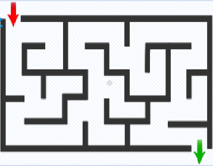
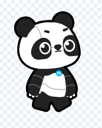
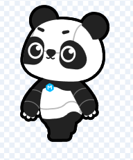
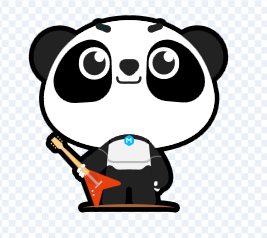
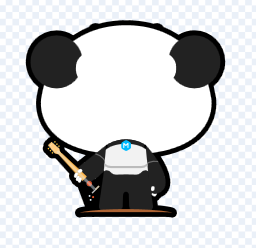
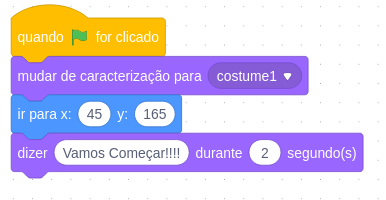
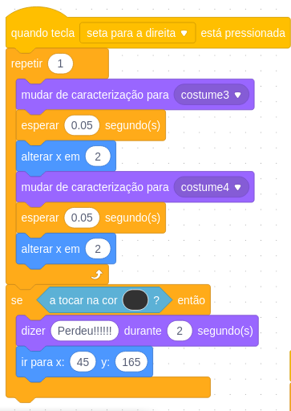
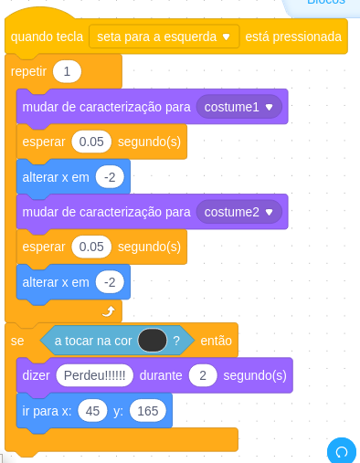
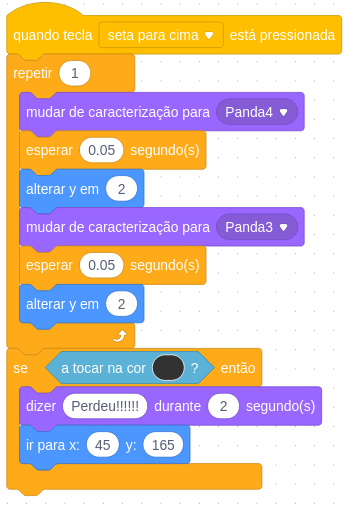
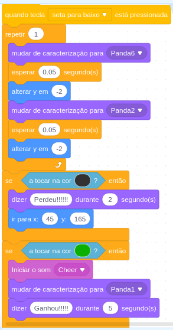

Nesta aula vamos construir um jogo no mblock, para isto precisamos de
quatro atores que usaremos o próprio panda, e um cenario que usaremos
esta imagem abaixo:

Como ator vamos adicionar ator já existente no mblock que possui duas caracterização e definimos tamanho como 25

Adicionamos mais duas caracterização invertendo horizontalmente as duas caracterizações anteriores

Escolhemos mais uma caracterização desta vez o mesmo personagem na frontal e duplicamos e invertemos a caracterização duplicada

Para finalizar apagamos aguns detalhes da caracterização como olhos e nariz para mais duas caracterização para ficar com aparência de costas para a tela, mais duas caracterização uma invertida da outra

para começar definimos de onde o ator irá começar o jogo

Na programação precisamos definir os movimentos das 4 direções, e as caracterizações de cada direção, e motivo de iniciar o jogo novamente e como definir a vitória




Para finalizar colocamos uma mensagem e um som para o ganhador do jogo!!!! Downloads do jogo labirinto Video